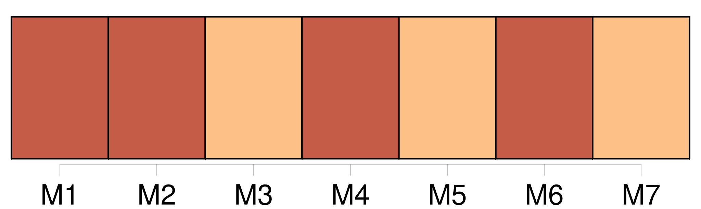
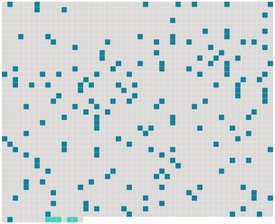

Longueur nb maillons : 169 mentions |
  |
XXX [J'] ai recours à toi, [mon] vieux camarade, dans l'embarras où [je] me trouve ; car tu peux [me] tirer d'affaire.
[Je] t'en serai reconnaissant jusqu'à la mort. [3 phrases]
[Je] n'ai pas à t'apprendre que ta cousine est religieuse à l'extrême, élevée par les Dames blanches ou noires de Nancy. Cela, tu le sais mieux que [moi] [4 phrases] Donc, nous étions fiancés ; [je] l'adorais comme [je] l'adore encore.
Elle semblait [m'] aimer. Un soir [je] reçus une dépêche qui [m'] appelait à Cologne pour une consultation suivie peut-être d'une opération grave et difficile. Comme [je] devais partir le lendemain, [je] courus faire mes adieux à Gilberte et dire pourquoi [je] ne dînerais point chez mes futurs beaux-parents le mercredi, mais seulement le vendredi, jour de [mon] retour. [1 phrases]
prends garde aux vendredis : [je] t'assure qu'ils sont funestes! Quand [je] parlai de [mon] départ, [je] vis une larme dans ses yeux ; mais quand [j'] annonçai [ma] prochaine revenue, elle battit aussitôt des mains et s'écria : « Quel bonheur!! [vous] me rapporterez quelque chose ; presque rien, un simple souvenir, mais un souvenir choisi pour moi. Il faut découvrir ce qui [me] fera le plus de plaisir, entendez -vous?? [Je] verrai si vous avez de l'imagination.
» [Je] veux être touchée par l'intention, par l'invention, [monsieur] , non par le prix. » Puis, après un nouveau silence, elle dit à mi-voix, les yeux baissés : « Si cela ne [vous] coûte rien, comme argent, et si c'est bien ingénieux, bien délicat, je [vous] ... je [vous] embrasserai.
» [2 phrases]
On [me] logea, on [m'] enferma presque ; [je] ne vis que des gens en larmes qui [m'] assourdissaient ; [j'] opérai un moribond qui faillit trépasser entre [mes] mains ; [je] restai deux nuits près de lui ; puis, quand [j'] aperçus une chance de salut, [je] me fis conduire à la gare. Or [je] m'étais trompé, [j'] avais une heure à perdre.
[J'] errais par les rues en songeant encore à [mon] pauvre malade, quand un individu [m'] aborda. [Je] ne sais pas l'allemand ; [il] ignorait le français ; enfin [je] compris qu'il me proposait des reliques. Le souvenir de Gilberte [me] traversa le coeur ; [je] connaissais sa dévotion fanatique. Voilà [mon] cadeau trouvé.
[Je] suivis l'homme dans un magasin d'objets de sainteté, et [je] pris un « bétit morceau d'un os des once mille fierges ».
La prétendue relique était enfermée dans une charmante boîte en vieil argent qui décida [mon] choix.
[Je] mis l'objet dans [ma] poche et [je] montai dans [mon] wagon. En rentrant chez [moi] , [je] voulus examiner de nouveau [mon] achat. [Je] le pris... [1 phrases]
[J'] eus beau fouiller [ma] poche, la retourner ; le petit os, gros comme la moitié d'une épingle, avait disparu. [Je] n'ai, tu le sais, [mon] cher abbé, qu'une foi moyenne ; tu as la grandeur d'âme, l'amitié, de tolérer [ma] froideur, et de [me] laisser libre, attendant l'avenir, dis -tu ; mais [je] suis absolument incrédule aux reliques des brocanteurs en piété ; et tu partages [mes] doutes absolus à cet égard.
Donc, la perte de cette parcelle de carcasse de mouton ne [me] désola point ; et [je] me procurai, sans peine, un fragment analogue que [je] collai soigneusement dans l'intérieur de [mon] bijou.
Et [j'] allai chez [ma] fiancée. Dès qu'elle [me] vit entrer, elle s'élança devant [moi] , anxieuse et souriante : « Qu'est -ce que [vous] m'avez rapporté??
» [Je] me laissai prier, supplier même ; et, quand [je] la sentis éperdue de curiosité, [je] lui offris le saint médaillon. [5 phrases]
[J'] eus honte de [ma] supercherie.
Mais une inquiétude l'effleura, qui devint aussitôt une crainte horrible ; et, me fixant au fond des yeux : [2 phrases]
» Avouer que [j'] avais acheté cet ossement à un marchand courant les rues, c'était [me] perdre. [1 phrases]
Une idée folle [me] traversa l'esprit ; [je] répondis à voix basse, d'un ton mystérieux :
» [1 phrases] vous [l'] avez volée. [3 phrases] [vous] avez fait cela... [1 phrases] [Racontez] ... [dites] -moi tout!!
» [J'] inventai une histoire fantastique avec des détails précis et surprenants. [J'] avais donné cent francs au gardien de l'édifice pour le visiter seul ; la châsse était en réparation ; mais [je] tombais juste à l'heure du déjeuner des ouvriers et du clergé ; en enlevant un panneau que [je] recollai ensuite soigneusement, [j'] avais pu saisir un petit os ( oh! si petit ) au milieu d'une quantité d'autres ( [je] dis une quantité en songeant à ce que doivent produire les débris de onze mille squelettes de vierges ).
Puis [je] m'étais rendu chez un orfèvre et [j'] avais acheté un bijou digne de la relique.
[Je] n'étais pas fâché de lui faire savoir que le médaillon [m'] avait coûté cinq cents francs. Mais elle ne songeait guère à cela ; elle [m'] écoutait frémissante, en extase. Elle murmura : « Comme je [vous] aime!!
» et se laissa tomber dans [mes] bras. Remarque ceci : [J'] avais commis, pour elle, un sacrilège. [J'] avais volé ; [j'] avais violé une église, violé une châsse ; violé et volé des reliques sacrées. Elle [m'] adorait pour cela ; [me] trouvait tendre, parfait, divin.
Telle est la femme, [mon] cher abbé, toute la femme. Pendant deux mois, [je] fus le plus admirable des fiancés.
Elle avait organisé dans sa chambre une sorte de chapelle magnifique pour y placer cette parcelle de côtelette qui [m'] avait fait accomplir, croyait -elle, ce divin crime d'amour ; et elle s'exaltait là devant, soir et matin. [Je] l'avais priée du secret, par crainte, disais [-je] , de [me] voir arrêté, condamné, livré à l'Allemagne.
[Elle] m'avait tenu parole. Or, voilà qu'au commencement de l'été, un désir fou lui vint de voir le lieu de [mon] exploit.
Elle pria tant et si bien son père ( sans lui avouer sa raison secrète ) qu'il l'emmena à Cologne en [me] cachant cette excursion, selon le désir de sa fille. [Je] n'ai pas besoin de te dire que [je] n'ai pas vu la cathédrale à l'intérieur. [J'] ignore où est le tombeau ( s'il y a tombeau? ) des onze mille vierges. [1 phrases]
[Je] reçus, huit jours après, dix lignes [me] rendant [ma] parole ; plus une lettre explicative du père, confident tardif. A l'aspect de la chasse, elle avait compris soudain [ma] supercherie, [mon] mensonge, et, en même temps, [ma] réelle innocence. [1 phrases]
Mais du moment que [je] n'avais pas fracturé un lieu sacré et plongé [ma] main profane au milieu de restes vénérables, [je] n'étais plus digne de [ma] blonde et délicate fiancée. On [me] défendit l'entrée de la maison.
[J'] eus beau prier, supplier, rien ne put attendrir la belle dévote.
[Je] fus malade de chagrin.
Or, la semaine dernière, sa cousine, qui est aussi la tienne, Mme d'Arville, [me] fit prier de la venir trouver. Voici les conditions de [mon] pardon. Il faut que [j'] apporte une relique, une vraie, authentique, certifiée par Notre Saint-Père le Pape, d'une vierge et martyre quelconque.
[Je] deviens fou d'embarras et d'inquiétude. [J'] irai à Rome, s'il le faut. Mais [je] ne puis [me] présenter au Pape à l'improviste et lui raconter [ma] sotte aventure.
Et puis [je] doute qu'on confie aux particuliers des reliques véritables. Ne pourrais -tu [me] recommander à quelque monsignor, ou seulement à quelque prélat français, propriétaire de fragments d'une sainte?? [1 phrases]
Sauve [-moi] , [mon] cher abbé, et [je] te promets de [me] convertir dix ans plus tôt! Mme d'Arville, qui prend la chose au sérieux, [m'] a dit : « Cette pauvre Gilberte ne se mariera jamais.
»
[Je] t'en supplie, fais qu'elle ne soit pas la onze mille et unième.
Pardonne, [je] suis indigne ; mais [je] t'embrasse et [je] t'aime de tout coeur.
[Ton vieil ami] , |
 |
La ressource peut être téléchargée sur la page Ortolang
Si vous avez des questions ou vous voyez des erreurs, merci d'envoyer un mail à silvia.federzoni89@gmail.com
Site développé par S. Federzoni (contact)